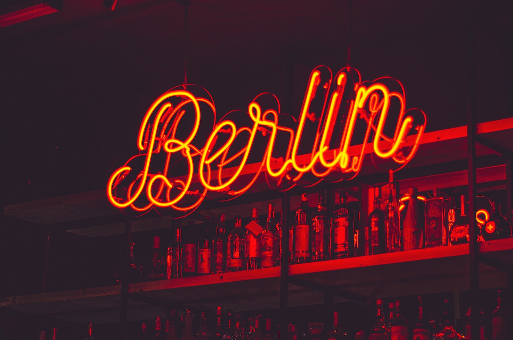
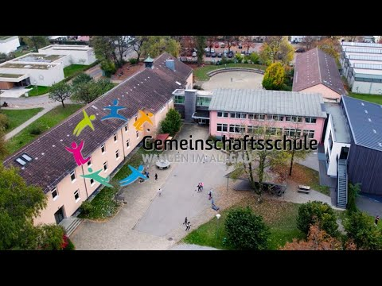

BERLIN-ABSCHLUSSFAHRT
JG9

Auf in eine neuses Abenteuer nach Berlin. RAUS AUS WANGEN!
Hier ist die komplette Stadt Berlin als grober Überblick.
ÜBER UNS:
Wir sind in der 9 Jahrgangsstufe der GMS Wangen im Allgäu.
Dies ist
unsere
letzte Klassenfahrt zusammen,
da nach dem 9 Schuhljahr die hälfte uns
leider verlassen wird,
da diese bereits ihren Hauptschuhl-abschluss gemacht
haben werden.

Hier siehst du unsere Schule :)
Wochenplanung:
Wir haben natürlich eine
vielfältige Wochenplanung in diesen 5 Tagen die ich hier auflesen möchte
um einen genauen Einblick in die Tagesstrucktur zu geben.
MONTAG:
Die Abfahrt findet mit einem Modernen Rrisebuss um
06.00 Uhr früh statt, natürlich legen wir auch wärend der Fahrt ein paar Pausen ein.
16.00 Uhr kommen wir an
und schauen uns die Umgebung also vorallem den Alexanderplatz an.
Motag wird ein entspannter Reise Tag der uns langsam in eine Umgebung führt die für viele eher neu ist.
STICHWORT: Stadtleben und Berlin.:))
(c) 2023 - Imaginary Compeny GmbH |
Impressum |
Datenschutz